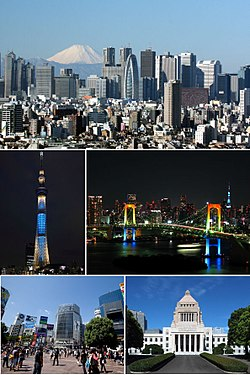

Paris
(French Paris [paˈʁi] Listen file info) is the capital and largest city in France. It is located in the north of the state, in the central part of the Parisian basin, on the river. Seine. Population 2.2 million people (2016)[3]. The center of the Greater Paris agglomeration (6.6 million), which is the core of the historical region of Ile-de-France (more than 12 million) [4]. Forms a commune and department, divided into 20 districts.
Refers to global cities and global financial centers. The headquarters of UNESCO and other international organizations are located here. The historical center formed by the Ile de la Cité and both banks of the Seine has evolved over the centuries. In the second half of the 19th century, it underwent a radical reconstruction. The palace and park ensemble of Versailles is located in the suburbs.
Founded in the III century BC. e. the Celtic tribe of the Parisians. Since the 3rd-4th centuries it has been known as the Gallo-Roman city of Parisii. Since the end of the 10th century, with interruptions, it has been the capital of France. Paris grew up on the site of the settlement of Lutetia, founded by the Celtic tribe of the Parisians in the 3rd century BC. e. The settlement was located on the safe Island of the City, surrounded by the waters of the River Seine. At the beginning of the II century BC. e. The settlement was surrounded by a fortified wall. The basis of the economy was trade: the Seine connected the Mediterranean with the British Isles. In 52 BC. e. the parisii joined the uprising of the Gauls against the rule of Rome, led by the Arvernian leader Vercingetorix. In the same year, the Battle of Lutetia took place, in which the Romans won. By this time, the writings of Julius Caesar "Notes on the Gallic War" date back, in which Lutetia was first mentioned - "the city of the Parisians, located on one of the islands of the Seine." After the Roman general Titus Labienus laid siege to it, the inhabitants destroyed the bridges and burned the city.
The Romans rebuilt it, building roads, villas, a 16-kilometer aqueduct, three terms, an amphitheater and a forum with a basilica from stone. The Roman administration was located on the island of Cite, where the port continued to function. In the III century, the city was raided by the Germanic tribe of the Alemanni, which led to the resettlement of residents from the left bank of the Seine to the more protected island of Cité. Then Lutetia began to be called the City of the Parisians (lat. Civitas Parisiorum), and then Parisium (lat. Parisium). The first Christian church appeared in the 4th century. The activity of Saint Genevieve, who became the patroness of Paris, fell on the 5th century. In 470, the Salian Franks, led by Childeric I, besieged the city for more than 10 years. At the end of the 5th century, Clovis temporarily turned Paris into the capital of the Frankish state[11].
.jpg)
Tokyo
(Jap. 東京 To: kyo: (inf.), "Eastern Capital" [4] [5]) is the capital and largest city of Japan, its administrative, financial, industrial and political center. The largest urban economy in the world[6]. It is located in the southeastern part of the island of Honshu, on the Kanto plain in the bay of the Tokyo Bay of the Pacific Ocean.
In addition to the capital, Tokyo is also one of the country's forty-seven prefectures. The area of the prefecture is 2188.67 km²[7], the population is 14,064,696 people (October 1, 2020)[8], the population density is 6426.14 people / km². As of August 1, 2021, the population of Tokyo was 14,043,239, making Tokyo the prefecture with the largest population in Japan.[1] Greater Tokyo is the urban area, metropolitan area and regional agglomeration with the largest population in the world, with a population of 38,140,000 as of 2016, and is part of the Taiheiyo metropolitan area[en].[2] Tokyo, being one of the largest cities on Earth[en], is considered the safest city in the world.[9][10][11][12][13]
The Tokyo metropolitan area (prefecture) is an administrative unit of Japan, which includes 23 special districts, the Tama region and island territories (the islands of Izu and Ogasawara). Founded in 1457 as Edo Castle. In 1869, during the Meiji Restoration, the capital of the state was moved to Edo and the city was renamed To: kyo: (Japanese 東京), which in Japanese means the eastern capital, the kanji 東 (onyomi: “to:”) - east and 京 (onyomi : "kyo:") - the capital. The previous capital - Kyoto, which then bore the official name of Heian-kyo - was allegorically called "Saikyo" - "Western Capital".
The Russian traditional form of writing is Tokyo[14]. Officially, Tokyo is not a city, but one of the prefectures, more precisely, the metropolitan area (jap. 都 to), the only one in this class. Its territory, in addition to part of the island of Honshu, includes several small islands to the south of it, as well as the islands of Izu and Ogasawara. Tokyo County consists of 62 administrative divisions - cities, towns and rural communities. When they say "city of Tokyo", they usually mean the 23 special districts included in the metropolitan area, which from 1889 to 1943 constituted the administrative unit of the city of Tokyo, and now they themselves are equated in status to cities; each has its own mayor and city council.
The metropolitan government is headed by a popularly elected governor. The government headquarters is located in Shinjuku, which is the county's municipal seat. Tokyo is also home to the state government and the Tokyo Imperial Palace (also known as the obsolete name Tokyo Imperial Castle), the main residence of Japanese emperors.
Kyiv
(Ukrainian Kyiv [ˈkɪjiu̯] pronunciation (inf.), other Russian KyyivGo to section "#Name") is the capital and largest city of Ukraine. Located on the Dnieper River, it is the center of the Kiev agglomeration. Separate administrative-territorial unit of Ukraine; cultural, political, socio-economic, transport, scientific and religious center of the country. Kiev is the administrative center of the Kiev region, although it is not part of it, having a special legal statusGo to the section "#Special legal status of the city". Located in the north of Ukraine. The seventh most populated city in Europe after Istanbul, Moscow, London, St. Petersburg, Berlin and Madrid.
The logo of Kiev, in translation - "the city where everything begins" Throughout its history, Kiev has been the capital of Polyany, Kievan Rus, the Kiev Principality, the Ukrainian People's Republic, the Ukrainian People's Republic of Soviets, the Ukrainian State, the Ukrainian Soviet Socialist Republic, and since 1991, independent Ukraine. It was also the center of the ancient Kiev Metropolis and continues to be so for the Orthodox Church of Ukraine, the Ukrainian Greek Catholic Church and the Ukrainian Orthodox Church (Moscow Patriarchate) claiming succession from it. It houses the governing structures of the Crimean Platform, GUAM, STCU, PANIA and MAAN (in 1993-2017). Due to its significance as the historical center of Russia, the city is called the "mother of Russian cities"; by virtue of religious significance - "New Jerusalem"; due to the mass heroism of the population in the Great Patriotic War, it bears the highest degree of distinction of the USSR “Hero City”.
Kyiv is home to the Kyiv-Pechersk Lavra, the Church of the Savior on Berestovo, the St. Sophia Cathedral and related monastery buildings that are UNESCO World Heritage Sites, as well as the Astronomical Observatory of Kyiv University, St. Andrew's and St. Cyril's Churches, included in its preliminary list. The Kiev TV Tower is the tallest free-standing metal structure in the world. The Byzantine emperor Constantine Porphyrogenitus, who wrote in the middle of the 10th century, noted that Kiev had a second name - Samvatas. Probably, it was either the ancient name of the city, or its designation in a non-Slavic environment.
In The Tale of Bygone Years, Kiev, in the mouth of Prince Oleg the Prophet, under the year 882, is called the “mother of Russian cities” (“mother of the Russian city”). This is understood as a tracing paper from the Greek "metropolis" ("meter" mother + "polis" city). This expression means that Kiev was the capital and all ancient Russian cities went from it. The same idiom is found in ancient Russian literature and in the future - for example, in the Eulogy of Konstantin of Murom of the 16th century, “together with the Christian church, the mother of the city of God-saved Kiev, cry out to God”.
Metropolitan Hilarion in his "Sermon on Law and Grace" compared Sophia of Kiev with the Temple of Solomon in Jerusalem. Also in the "Tale of Bygone Years" Yaroslav the Wise, when describing the construction of St. Sophia, was compared with King Solomon. This has been interpreted by many researchers as likening Kiev to the New Jerusalem. As it was with Constantinople. According to B. A. Uspensky, this is evident from the ratio of St. Sophia of the cities of Kiev and Constantinople with the Temple of Wisdom in Jerusalem, as well as the Golden Gate in three cities[22]. As I. N. Danilevsky writes, already in the 11th-12th centuries there was an idea in Russia that Kiev was New Jerusalem. The historian M. B. Sverdlov does not agree with this concept. He believes that the construction of the churches of St. Sophia, St. Irene and St. George, as well as their Byzantine architecture, the Golden Gate - all this goes back to the tradition of Constantinople, but not to Jerusalem.
.jpg)